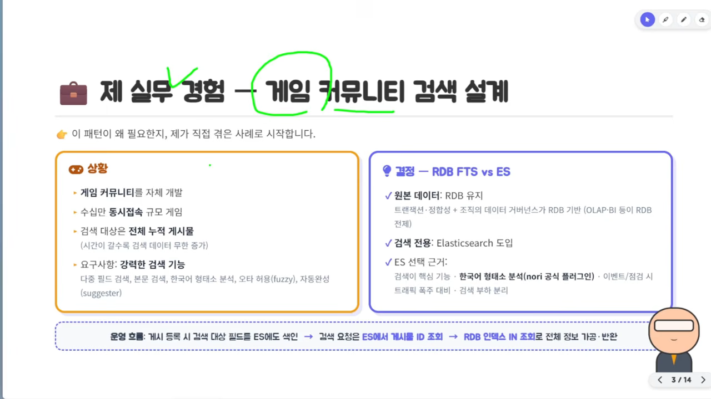
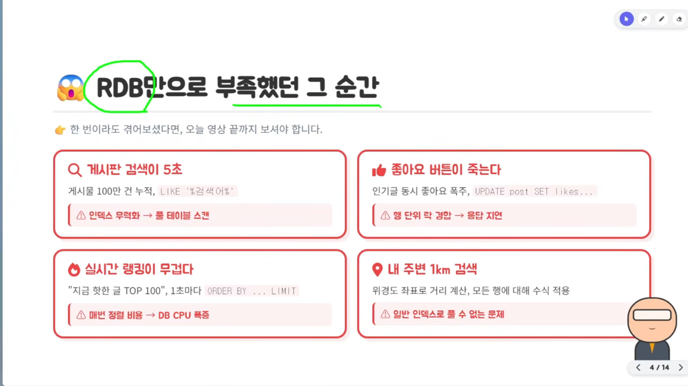
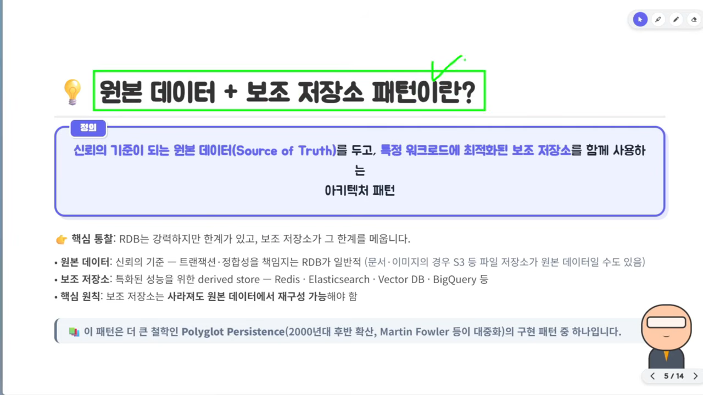
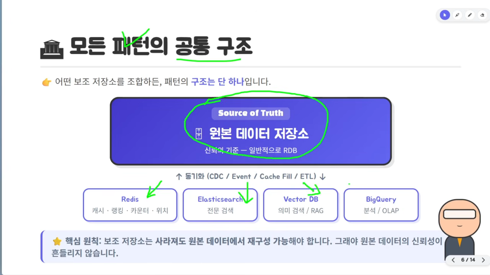
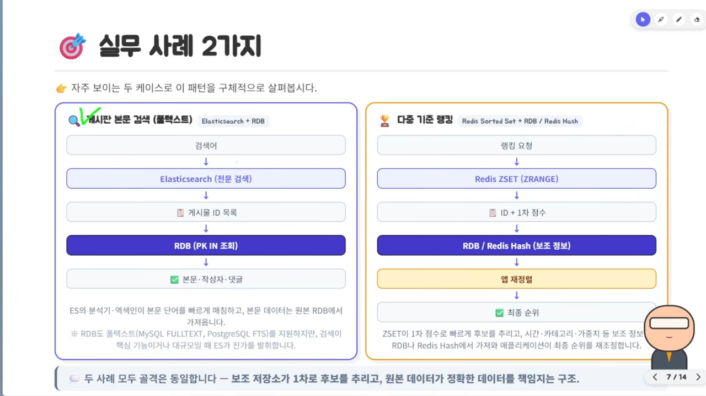
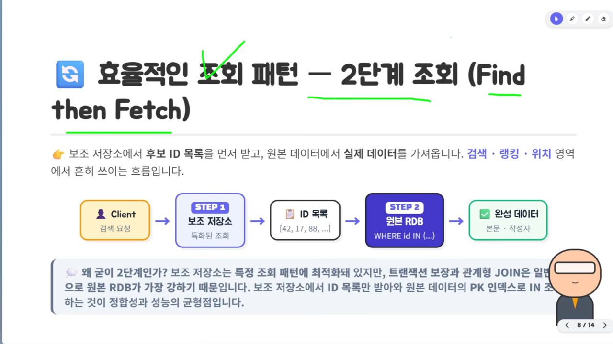
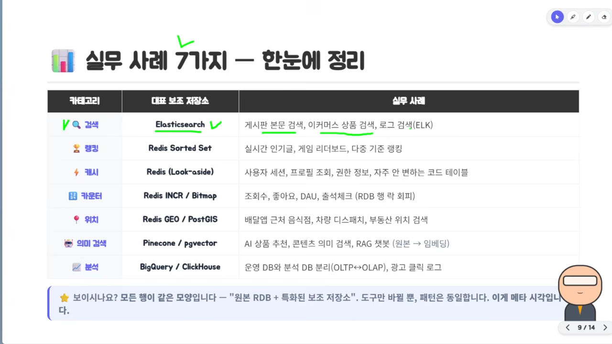
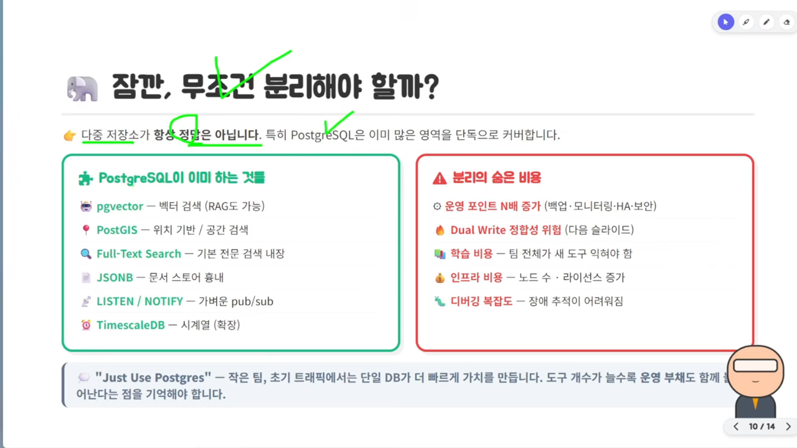
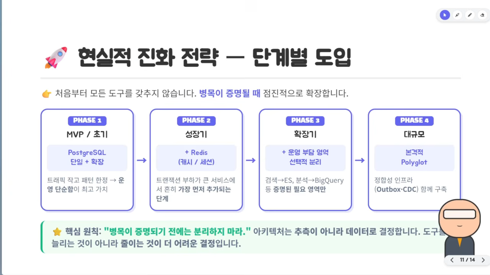
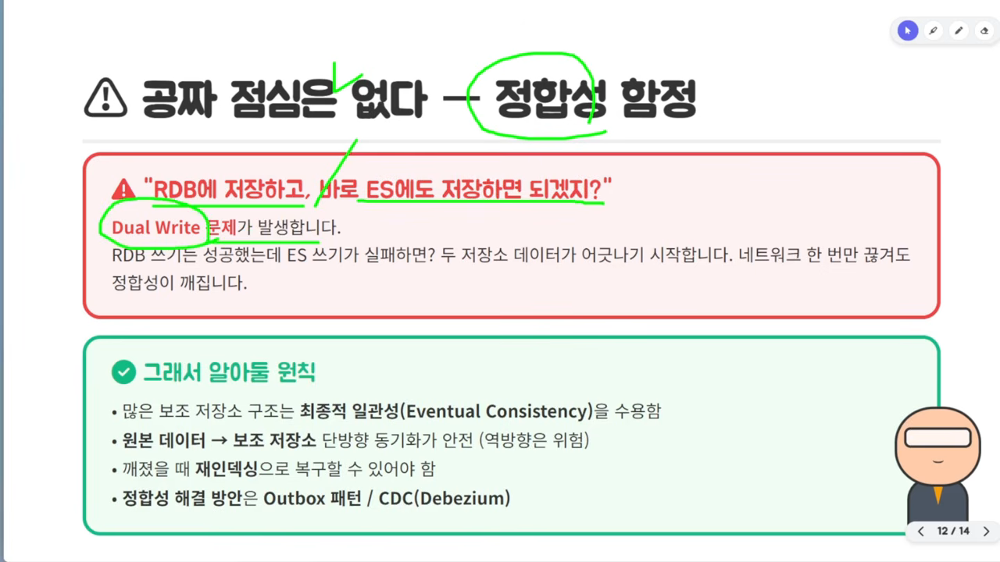

게임 커뮤니티 검색을 RDB와 Elasticsearch로 나눈 이유
발표자가 게임 회사에서 커뮤니티를 직접 만들던 경험으로 시작해요. 보통 모바일 게임은 네이버 카페를 커뮤니티로 쓰지만, 이 게임은 자체 커뮤니티를 만들기로 했어요. 수십만 명이 동시에 접속할 규모였고, 검색 대상은 6개월, 12개월, 전체 누적 게시물까지였어요. 시간이 갈수록 검색할 데이터가 끝없이 늘어나는 구조였죠.
아래 슬라이드의 왼쪽 주황 칸이 그 상황이에요. 맨 아래 '요구사항'에 다중 필드 검색, 본문 검색, 한국어 형태소 분석, 오타 허용(fuzzy), 자동완성(suggester)이 적혀 있어요. 오른쪽 보라 칸은 RDB 풀텍스트 검색(FTS(Full-Text Search))과 Elasticsearch를 비교한 결정이에요.

왜 RDB를 버리지 않았을까요
원본 데이터는 RDB에 남겼어요. 트랜잭션과 정합성을 보장해 주고, 회사의 데이터 거버넌스가 RDB 위에 서 있었기 때문이에요. OLAP(Online Analytical Processing)이나 BI(Business Intelligence)가 전부 RDB를 기준으로 연결돼 있었어요.
Elasticsearch를 들인 이유는 세 가지예요. 앞에서 말한 강력한 검색 기능, 게임 이벤트나 정기 점검 때 몰리는 트래픽 대비, 그리고 RDB에서 검색 부하를 떼어 내는 것이에요.
슬라이드 맨 아래 점선 칸이 운영 흐름이에요. 글을 쓰면 RDB에 저장하면서 검색 대상 필드를 Elasticsearch에도 색인해요. 검색 요청이 오면 Elasticsearch에서 게시물 ID를 찾고, RDB에서 그 ID로 인덱스 IN 조회를 해서 전체 내용을 만들어 돌려줘요. 이 흐름이 3장에서 다시 나와요.
원본 데이터 + 보조 저장소 패턴
발표자는 RDB 하나로 부족해지는 순간을 네 장의 카드로 보여 줘요. 카드마다 아래 빨간 줄에 '왜 막히는지'가 적혀 있어요.

| 막히는 순간 | RDB에서 생기는 일 | 영상이 권하는 보조 저장소 |
|---|---|---|
| 게시판 본문 검색 | LIKE '%검색어%'는 인덱스를 못 타서 풀 테이블 스캔이 일어나요 | Elasticsearch |
| 인기 글 좋아요 폭주 | UPDATE ... SET likes에 행 단위 락 경합이 생겨 응답이 늦어져요 | Redis (쓰기가 빠르고 싱글 스레드) |
| 실시간 랭킹 TOP 100 | 1초마다 ORDER BY ... LIMIT를 돌려 정렬 비용이 DB(Database) CPU(Central Processing Unit)를 잡아먹어요 | Redis Sorted Set |
| 내 주변 1km 검색 | 모든 행에 거리 계산식을 적용해야 하고 일반 인덱스로는 못 풀어요 | 위치 기반 DB |
패턴에 이름 붙이기
발표자는 이 구조를 '원본 데이터 + 보조 저장소 패턴'이라고 직접 이름 지었어요. 슬라이드 위쪽 보라 상자가 정의예요. 신뢰의 기준이 되는 원본 데이터(Source of Truth)를 두고, 특정 워크로드에 최적화된 보조 저장소를 함께 쓰는 아키텍처라는 뜻이에요. 워크로드는 '특정 업무 패턴' 정도로 이해하면 된다고 해요.

원본은 보통 RDB예요. 트랜잭션과 정합성을 책임지니까요. 다만 꼭 RDB일 필요는 없어서, 문서나 이미지라면 S3 같은 파일 저장소가 원본이 될 수도 있어요. 보조 저장소는 특화된 성능을 위해 원본에서 파생해 만든 저장소(derived store)예요. 슬라이드에는 Redis, Elasticsearch, 벡터 DB, BigQuery가 적혀 있어요.
맨 아래 줄은 이 패턴이 더 큰 개념인 Polyglot Persistence를 구현하는 한 가지 모습이라는 설명이에요.
모든 패턴의 공통 구조
다음 슬라이드는 이걸 한 장으로 그려요. 위의 큰 보라 상자가 원본 데이터 저장소이고, 아래 네 칸이 보조 저장소예요. 칸마다 쓰임이 붙어 있어요. Redis는 캐시·랭킹·카운터·위치, Elasticsearch는 전문 검색, 벡터 DB는 의미 검색·RAG(Retrieval-Augmented Generation), BigQuery는 분석·OLAP이에요. 두 층 사이 화살표에는 '동기화 (CDC / Event / Cache Fill / ETL)'라고 적혀 있어요.

먼저 찾고, 그다음 가져오기
보조 저장소를 붙인 뒤 조회는 어떻게 할까요? 발표자는 자주 보이는 두 사례로 보여 줘요. 슬라이드 왼쪽이 게시판 본문 검색, 오른쪽이 다중 기준 랭킹이에요. 두 칸 모두 위에서 아래로 같은 순서를 밟아요. 가운데 진한 보라 칸이 원본 쪽이에요.

게시판 풀텍스트 검색은 1장의 운영 흐름 그대로예요. 검색어가 Elasticsearch로 가면 분석기와 역색인이 본문 단어를 빠르게 매칭해서 게시물 ID 목록을 줘요. 그 ID로 RDB에서 PK(Primary Key) IN 조회를 해서 본문·작성자·댓글을 가져와요. 왼쪽 칸 아래 작은 글씨는 RDB도 풀텍스트 검색(MySQL FULLTEXT, PostgreSQL FTS)을 지원하지만, 검색이 핵심 기능이거나 규모가 크면 Elasticsearch가 진가를 발휘한다는 말이에요.
다중 기준 랭킹은 동점이 생기거나 기준이 여럿일 때예요. Redis Sorted Set에 1차 점수로 정렬해 두고, ZRANGE로 상위 후보를 빠르게 줄여요. 그 ID로 RDB나 Redis Hash에서 시간·카테고리·가중치 같은 보조 정보를 가져와요. 마지막으로 애플리케이션이 이걸 합쳐 최종 순위를 다시 정렬해요. 오른쪽 칸의 노란 '앱 재정렬'이 그 단계예요.
2단계 조회 (Find then Fetch)
발표자는 이 조회 방식을 '2단계 조회'라고 불러요. 먼저 찾고(Find), 그다음 가져온다(Fetch)는 뜻이에요. 슬라이드 가운데 줄을 왼쪽부터 읽으면 돼요. 'STEP 1' 보조 저장소가 [42, 17, 88, ...] 같은 ID 목록을 내놓고, 'STEP 2' 원본 RDB가 WHERE id IN (...)으로 완성된 데이터를 돌려줘요.

왜 굳이 둘로 나눌까요? 보조 저장소는 특정 조회 패턴에 최적화돼 있고, 원본 RDB는 트랜잭션 보장과 관계형 조인에 강하기 때문이에요. 각자 잘하는 일만 시키는 거예요.
일곱 가지 사례, 하나의 모양
발표자는 실무 사례 일곱 가지를 표 한 장에 모아요. 가운데 열 '대표 보조 저장소'만 바뀌고, 나머지 구조는 행마다 같아요.

| 분류 | 대표 보조 저장소 | 실무 사례 |
|---|---|---|
| 검색 | Elasticsearch | 게시판 본문 검색, 이커머스 상품 검색, 로그 검색(ELK(Elasticsearch, Logstash, Kibana)) |
| 랭킹 | Redis Sorted Set | 실시간 인기 글, 게임 리더보드, 다중 기준 랭킹 |
| 캐시 | Redis (Look-aside) | 사용자 세션, 프로필 조회, 권한 정보, 자주 안 변하는 코드 테이블 |
| 카운터 | Redis INCR / Bitmap | 조회수, 좋아요, DAU(Daily Active Users), 출석 체크 (RDB 행 락 회피) |
| 위치 | Redis GEO / PostGIS | 배달앱 근처 음식점, 차량 디스패치, 부동산 위치 검색 |
| 의미 검색 | Pinecone / pgvector | AI(Artificial Intelligence) 상품 추천, 콘텐츠 의미 검색, RAG 챗봇 |
| 분석 | BigQuery / ClickHouse | 운영 DB와 분석 DB 분리(OLTP(Online Transaction Processing)↔OLAP), 광고 클릭 로그 |
발표자는 이렇게 개별 사례를 넘어 그 밑의 공통 구조를 보는 눈을 '메타 시각'이라고 불러요. 도구 이름을 많이 외우는 것보다 이 모양을 알아보는 게 중요하다는 뜻이에요.
분리는 공짜가 아니에요
그럼 무조건 나누는 게 좋을까요? 발표자는 다중 저장소가 늘 정답은 아니라고 해요. 슬라이드 왼쪽 초록 칸은 PostgreSQL 하나로 이미 할 수 있는 일, 오른쪽 빨간 칸은 저장소를 나눌 때 숨어 있는 비용이에요.

왼쪽 칸을 보면 PostgreSQL은 pgvector로 벡터 검색, PostGIS로 위치 검색, 기본 풀텍스트 검색을 해요. JSONB로 문서를 저장하고, LISTEN/NOTIFY로 가벼운 pub/sub 알림을 만들고, TimescaleDB 확장으로 시계열 DB까지 돼요. 아래 회색 줄의 'Just Use Postgres'는 작은 팀이나 초기 트래픽에서는 DB 하나가 더 빨리 가치를 만든다는 말이에요. 도구가 늘수록 운영 부채도 함께 불어나요.
오른쪽 칸의 비용은 다섯 가지예요.
- 운영 포인트가 N배 — 백업, 모니터링, HA(High Availability), 보안을 저장소마다 챙겨야 해요.
- 듀얼 라이트 정합성 위험 — 두 저장소에 함께 써야 해서, 한쪽만 기록되는 일이 생겨요. 5장에서 자세히 다뤄요.
- 학습 비용 — 팀 전체가 새 도구를 익혀야 해요.
- 인프라 비용 — 노드 수가 늘고, 경우에 따라 라이선스 비용도 들어요.
- 디버깅 복잡도 — 장애가 났을 때 원인을 따라가기 어려워져요.
병목이 증명될 때 한 단계씩
그래서 발표자는 처음부터 모든 도구를 갖추지 말라고 해요. 슬라이드의 네 칸을 왼쪽부터 따라가면 돼요. 칸마다 위에 단계 이름, 가운데 보라 상자에 그 단계에서 쓰는 저장소, 아래에 이유가 있어요.

- MVP(Minimum Viable Product)·초기 — PostgreSQL 하나와 확장 기능 — 트래픽이 작고 패턴도 한정적이에요. 운영이 단순한 게 가장 큰 가치예요.
- 성장기 — Redis 추가 — 특정 조회 부하가 쌓이면 캐시·세션용으로 붙여요. 트랜잭션 부하가 큰 서비스에서 가장 먼저 추가되는 도구라고 해요.
- 확장기 — 필요가 증명된 영역만 분리 — 검색은 Elasticsearch, 분석은 BigQuery처럼 병목이 생긴 곳만 떼어 내요.
- 대규모 — 본격적인 Polyglot — 데이터와 트래픽이 아주 커지면 목적마다 저장소를 둬요. 이때 Outbox나 CDC 같은 정합성 장치를 함께 만들어요.
슬라이드 아래 초록 줄이 이 장의 결론이에요.
병목이 증명되기 전에는 분리하지 마라.
— 영상 10:27 (슬라이드 문구)
듀얼 라이트와 최종적 일관성
여러 저장소를 쓸 때는 정합성을 꼭 따로 챙겨야 해요. 발표자는 이걸 '공짜 점심은 없다'고 표현해요. 슬라이드 위쪽 빨간 칸의 큰따옴표 문장이 흔히 하는 생각이에요. RDB에 저장하고 바로 Elasticsearch에도 저장하면 되겠지, 하는 거죠.

문제는 RDB 쓰기는 성공했는데 Elasticsearch 쓰기가 실패할 때예요. 그 순간부터 두 저장소의 데이터가 어긋나기 시작해요. 슬라이드 말대로 네트워크가 한 번만 끊겨도 정합성이 깨져요. 이게 듀얼 라이트 문제예요.
아래 그림 왼쪽이 그 상황이고, 오른쪽이 영상이 권하는 방향이에요. 애플리케이션은 원본에만 쓰고, 보조 저장소는 원본에서 한 방향으로 따라오게 해요.
강한 일관성과 최종적 일관성
발표자가 강조하는 원칙은 보조 저장소 구조가 대부분 최종적 일관성을 받아들인다는 거예요. RDB는 강한 일관성이라 데이터가 언제나 정확히 맞아요. 보조 저장소는 잠깐 어긋날 수 있지만 결국에는 맞춰지면 돼요. 발표자는 유튜브 조회수를 예로 들어요. 내가 보는 숫자와 다른 사람이 보는 숫자가 잠깐 다르다가 결국 맞춰지는 것과 같아요.
- 보조 저장소는 최종적 일관성을 받아들이는가?
- 동기화가 원본 → 보조 저장소 한 방향인가? (반대 방향은 위험해요)
- 보조 저장소가 깨졌을 때 원본에서 재인덱싱으로 복구할 수 있는가?
- 듀얼 라이트 정합성을 Outbox 패턴이나 CDC(Debezium)로 따로 설계했는가?
마지막으로 발표자는 이렇게 정리해요. 아키텍처 역량은 도구를 많이 아는 데서가 아니라, 적절한 도구를 고르는 안목에서 나온다고요.
올바른 도구를 올바른 자리에
— 영상 12:38